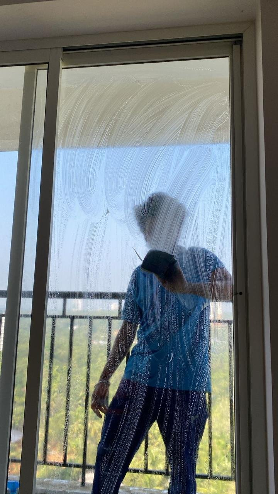

Apartment Living
Deep Cleaning Tips for Apartments in Kochi

Balcony window cleaning in a Kochi apartment.
Apartments in Kochi come with their own particular cleaning demands — balconies exposed to coastal air, shared building dust, and often less storage space to work around than an independent house. Deep cleaning a flat well means accounting for all of that.
Balconies collect more than they look like they do
Open balconies and grilled windows, common across Kochi's apartment blocks, let in a steady trickle of dust, pollen, and coastal humidity. Glass, railings, and window tracks in these areas tend to need more frequent attention than an equivalent surface in an enclosed room.
Shared building air and vents
Apartments sharing ventilation or stairwells with neighboring units can pick up dust and odors from outside a single household's control. Exhaust fans, vents, and door frames near shared corridors are worth including specifically in a deep clean, since they're easy to overlook.
Working around limited storage
Smaller storage spaces mean cabinets and shelving get used more intensively, which speeds up buildup inside them. Kitchen cabinets in particular benefit from a full empty-and-wipe during a deep clean, rather than just a surface pass.
Flooring in multi-unit buildings
Tile and marble flooring, standard in most Kochi apartments, show dust and grime differently than the same materials would in an independent house — often more visibly, given how light reflects in typical flat layouts. A full floor treatment as part of a deep clean tends to make a noticeably bigger visual difference here.
Apartment deep cleaning around Kadavanthra
Kadavanthra's mix of residential complexes follows this pattern closely — balcony-facing units in particular benefit from the kind of detailed, apartment-adjusted approach described above, rather than a generic whole-house checklist applied without changes.
Learn more
My Homey | Cleaning Services Kochi offers apartment deep cleaning across Kochi, based in Kadavanthra. See also this complete guide to deep cleaning a home in Kochi for a fuller room-by-room breakdown.